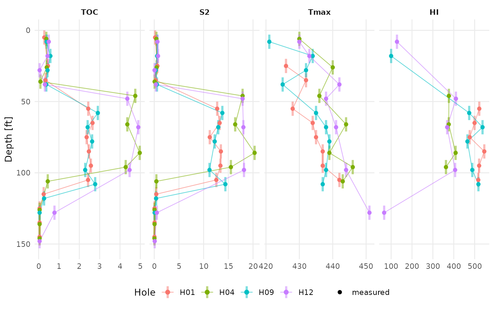
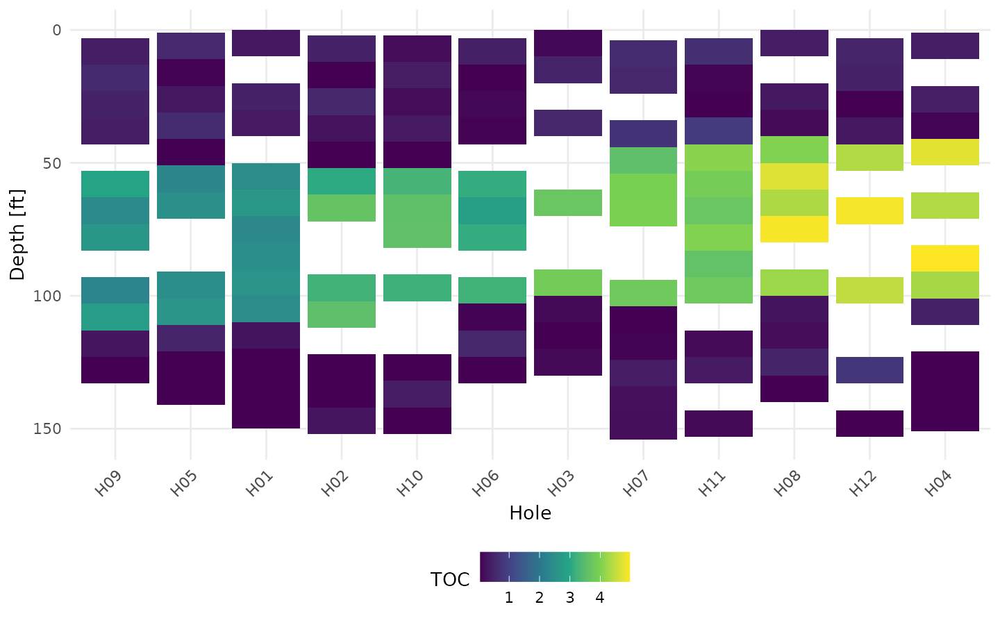
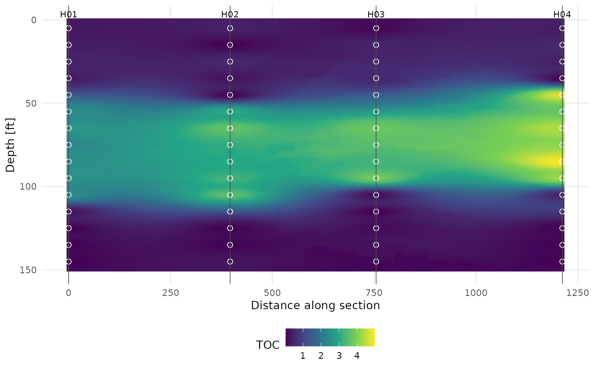
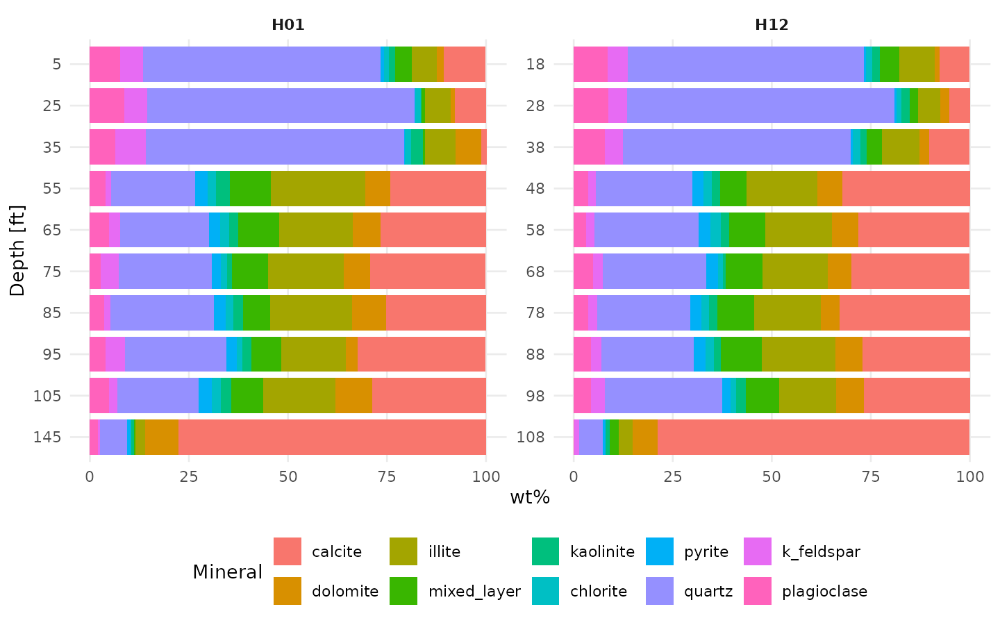
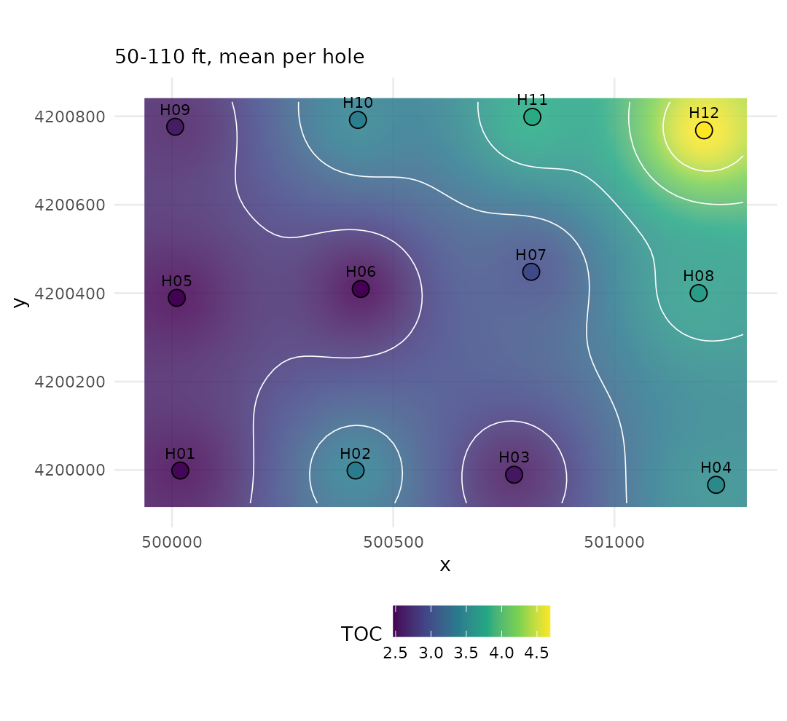
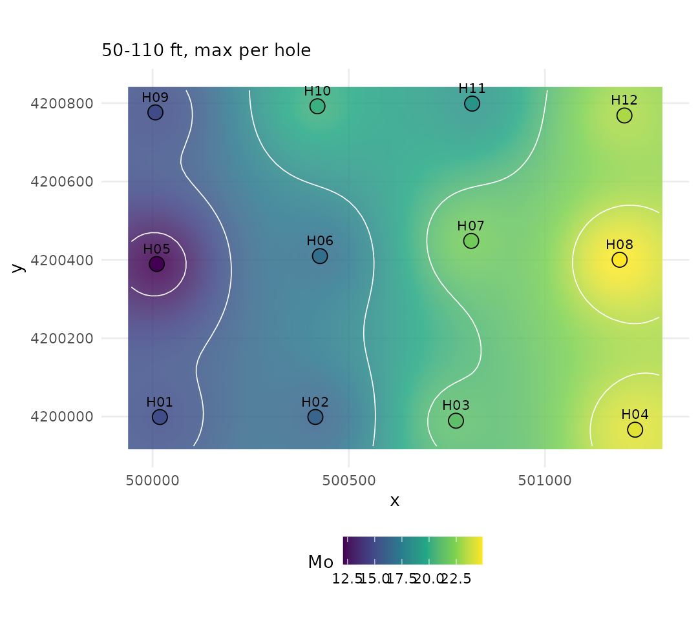
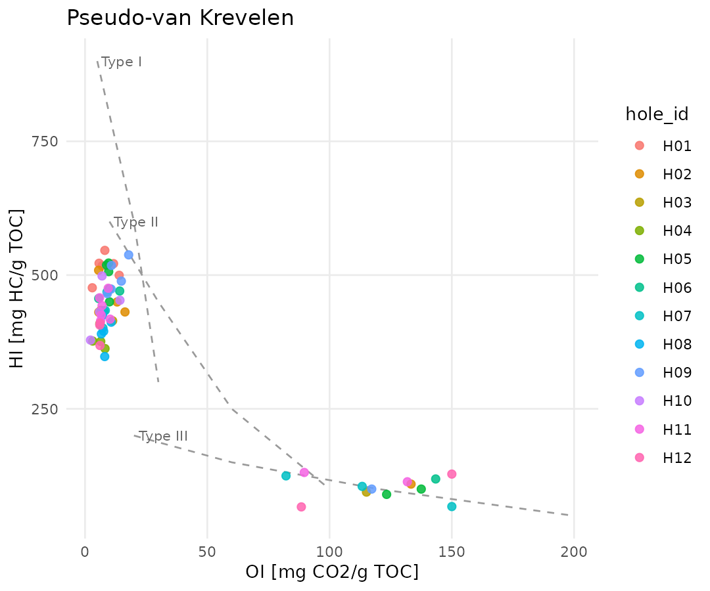
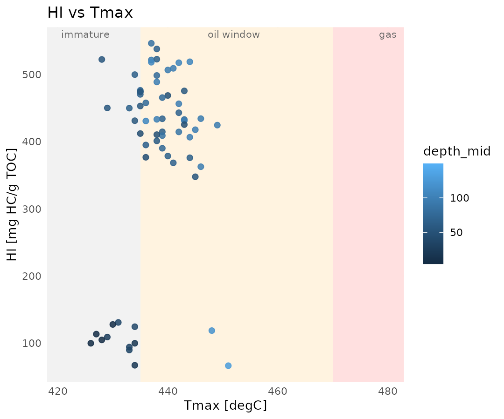
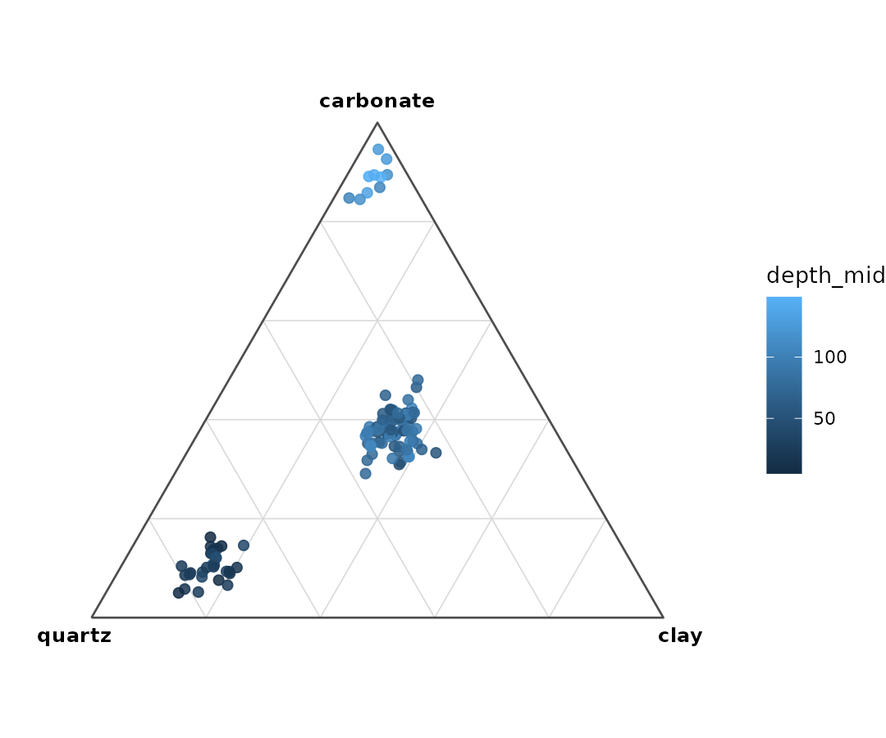

1. Reading what the lab sent
Laboratories deliver wide tables — one row per sample, one column per mineral, oxide or pyrolysis parameter — with their own spellings and unit conventions. The readers accept that as-is:
xrd <- data.frame(Sample = c("A1", "A2"), Quartz = c(40, 12), "K-Feldspar" = c(5, 1),
"Illite/Mica" = c(25, 3), "I/S" = c(6, 1), Calcite = c(20, 80), Pyrite = c(2, 1),
"Total Clay (wt%)" = c(31, 4), check.names = FALSE)
read_xrd(xrd, lab = "Lab A")
#> # A tibble: 14 × 9
#> sample_id method analyte value unit lod qualifier lab source
#> <chr> <chr> <chr> <dbl> <chr> <dbl> <chr> <chr> <chr>
#> 1 A1 XRD quartz 40 wt% NA NA Lab A NA
#> 2 A2 XRD quartz 12 wt% NA NA Lab A NA
#> 3 A1 XRD k_feldspar 5 wt% NA NA Lab A NA
#> 4 A2 XRD k_feldspar 1 wt% NA NA Lab A NA
#> 5 A1 XRD illite 25 wt% NA NA Lab A NA
#> 6 A2 XRD illite 3 wt% NA NA Lab A NA
#> 7 A1 XRD mixed_layer 6 wt% NA NA Lab A NA
#> 8 A2 XRD mixed_layer 1 wt% NA NA Lab A NA
#> 9 A1 XRD calcite 20 wt% NA NA Lab A NA
#> 10 A2 XRD calcite 80 wt% NA NA Lab A NA
#> 11 A1 XRD pyrite 2 wt% NA NA Lab A NA
#> 12 A2 XRD pyrite 1 wt% NA NA Lab A NA
#> 13 A1 XRD total_clay 31 wt% NA NA Lab A NA
#> 14 A2 XRD total_clay 4 wt% NA NA Lab A NA
xrf <- data.frame(Sample = c("A1", "A2"), SiO2 = c(62.1, 8.3), CaO = c(9.9, 48.2),
Zr_ppm = c("180", "<5"), "Ba (ppm)" = c(410, 95), check.names = FALSE)
read_xrf(xrf, lab = "Lab B")
#> # A tibble: 8 × 9
#> sample_id method analyte value unit lod qualifier lab source
#> <chr> <chr> <chr> <dbl> <chr> <dbl> <chr> <chr> <chr>
#> 1 A1 XRF SiO2 62.1 wt% NA NA Lab B NA
#> 2 A2 XRF SiO2 8.3 wt% NA NA Lab B NA
#> 3 A1 XRF CaO 9.9 wt% NA NA Lab B NA
#> 4 A2 XRF CaO 48.2 wt% NA NA Lab B NA
#> 5 A1 XRF Zr 180 ppm NA NA Lab B NA
#> 6 A2 XRF Zr 5 ppm 5 < Lab B NA
#> 7 A1 XRF Ba 410 ppm NA NA Lab B NA
#> 8 A2 XRF Ba 95 ppm NA NA Lab B NA"<5" became
value = 5, lod = 5, qualifier = "<". Units were taken
from the column suffixes. Column names that are not analytes are
reported, not silently dropped.
A sample table gives every sample_id a hole, coordinates
and a depth interval; gc_data() puts the pieces together
and validates them.
samples <- data.frame(sample_id = c("A1", "A2"), hole_id = "W1", x = 500100, y = 4200100,
depth_top = c(50, 60), depth_base = c(60, 70))
ds <- gc_data(samples, dplyr::bind_rows(read_xrd(xrd), read_xrf(xrf)), crs = 26914)
ds
#> <gc_data> 2 samples in 1 holes; 22 measurements
#> methods: XRD (14), XRF (8)
#> analytes per method: XRD=7, XRF=4
#> censored (<LOD): 1
#> depth: 50-70 ft
#> x: 500100-500100 y: 4200100-4200100 (EPSG:26914)
gc_wide(ds, "XRD")
#> # A tibble: 2 × 16
#> sample_id hole_id x y depth_top depth_base sample_type z
#> <chr> <chr> <dbl> <dbl> <dbl> <dbl> <chr> <dbl>
#> 1 A1 W1 500100 4200100 50 60 NA NA
#> 2 A2 W1 500100 4200100 60 70 NA NA
#> # ℹ 8 more variables: depth_mid <dbl>, quartz <dbl>, k_feldspar <dbl>,
#> # illite <dbl>, mixed_layer <dbl>, calcite <dbl>, pyrite <dbl>,
#> # total_clay <dbl>2. The example dataset
gc_example is synthetic: twelve holes on a grid, fifteen
10-ft intervals each, through a sandstone, an organic-rich calcareous
mudstone whose TOC rises eastward, and a limestone. Every sample has XRD
and XRF; core and most cuttings have pyrolysis.
ds <- gc_example
ds
#> <gc_data> 180 samples in 12 holes; 4192 measurements
#> methods: SRA (631), XRD (1221), XRF (2340)
#> analytes per method: SRA=5, XRD=11, XRF=13
#> censored (<LOD): 85
#> depth: 0-154 ft
#> x: 500007-501230 y: 4199966-4200799 (EPSG:26914)
gc_analytes(ds)
#> $SRA
#> [1] "TOC" "S1" "S2" "S3" "Tmax"
#>
#> $XRD
#> [1] "quartz" "k_feldspar" "plagioclase" "calcite" "dolomite"
#> [6] "pyrite" "illite" "mixed_layer" "kaolinite" "chlorite"
#> [11] "total_clay"
#>
#> $XRF
#> [1] "SiO2" "Al2O3" "CaO" "MgO" "K2O" "Na2O" "Fe2O3" "TiO2" "LOI"
#> [10] "Zr" "V" "Mo" "Ni"3. Processing
Substitute censored values, add the derived indices, and — for anything statistical on compositions — take log-ratios.
ds <- ds |>
gc_substitute_lod("half") |>
gc_indices()
gc_analytes(ds)$SRA
#> [1] "TOC" "S1" "S2" "S3" "Tmax" "HI" "OI" "PI"
#> [9] "S1_TOC" "Ro_eq"
w <- gc_wide(ds, "XRD", c("quartz", "carbonate", "clay"))
head(gc_clr(w[, c("quartz", "carbonate", "clay")]))
#> quartz carbonate clay
#> [1,] 1.0277429 -0.54890522 -0.4788377
#> [2,] NA 0.23978654 -0.2397865
#> [3,] 1.3469931 -0.67908321 -0.6679099
#> [4,] 1.2488181 -0.86177865 -0.3870394
#> [5,] NA 0.23978654 -0.2397865
#> [6,] -0.3332545 0.03191509 0.30133944. Depth
plot_depth_profile(ds, "SRA", c("TOC", "S2", "Tmax", "HI"), holes = c("H01", "H04", "H09", "H12"))
plot_depth_heatmap(ds, "SRA", "TOC")
plot_section(ds, "SRA", "TOC", holes = c("H01", "H02", "H03", "H04"))
plot_mineralogy(ds, holes = c("H01", "H12"))
5. Plan
plot_map() summarises each hole over a depth window and
draws an inverse-distance surface under the points.


6. Cross-plots
plot_kerogen(ds, "hi_oi")
#> Warning: Removed 116 rows containing missing values or values outside the scale range
#> (`geom_point()`).
plot_kerogen(ds, "hi_tmax", colour = "depth_mid")
#> Warning: Removed 116 rows containing missing values or values outside the scale range
#> (`geom_point()`).
plot_ternary(ds, "XRD", c("quartz", "carbonate", "clay"), colour = "depth_mid")
#> Warning: Removed 69 rows containing missing values or values outside the scale range
#> (`geom_point()`).
7. Summaries for reports
gc_hole_summary(ds, "SRA", depth = c(50, 110), analytes = c("TOC", "HI", "Tmax", "Ro_eq"))
#> # A tibble: 12 × 8
#> hole_id x y n TOC Tmax HI Ro_eq
#> <chr> <dbl> <dbl> <int> <dbl> <dbl> <dbl> <dbl>
#> 1 H01 500019. 4199999. 6 2.49 436. 514. 0.679
#> 2 H02 500415. 4199999. 6 3.38 436 455. 0.688
#> 3 H03 500773. 4199989. 6 2.57 442. 424. 0.805
#> 4 H04 501230. 4199966. 6 3.52 443 382. 0.814
#> 5 H05 500011. 4200389. 6 2.47 438. 499. 0.719
#> 6 H06 500427. 4200410. 6 2.47 439. 458. 0.737
#> 7 H07 500812. 4200448. 6 2.95 438. 423. 0.730
#> 8 H08 501190. 4200400. 6 3.69 442. 389. 0.800
#> 9 H09 500007. 4200776. 6 2.60 437. 497. 0.713
#> 10 H10 500420. 4200792. 6 3.42 439 440. 0.742
#> 11 H11 500814. 4200799. 6 3.82 442. 442. 0.789
#> 12 H12 501203. 4200768. 6 4.69 442. 387. 0.805
head(gc_interval_stats(ds, "XRD", breaks = 50, analytes = c("quartz", "carbonate", "clay", "BI_min")))
#> # A tibble: 6 × 10
#> hole_id x y bin_top bin_base n quartz carbonate clay BI_min
#> <chr> <dbl> <dbl> <dbl> <dbl> <int> <dbl> <dbl> <dbl> <dbl>
#> 1 H01 500019. 4199999. 0 50 5 64.2 5.84 7 0.786
#> 2 H01 500019. 4199999. 50 100 5 23.7 33.8 32.7 0.333
#> 3 H01 500019. 4199999. 100 150 5 13.6 24.8 7.02 0.244
#> 4 H02 500415. 4199999. 0 50 5 61.8 4.72 9.06 0.764
#> 5 H02 500415. 4199999. 50 100 5 24.4 32.7 33.5 0.327
#> 6 H02 500415. 4199999. 100 150 5 26.4 7.26 5.84 0.347